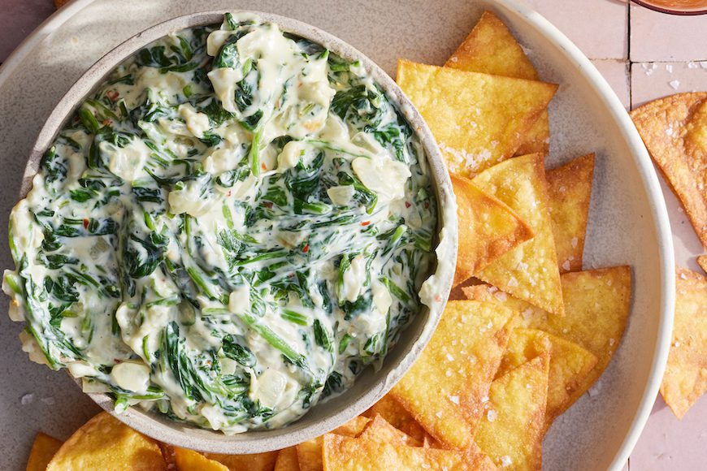

Hot Spinach Artichoke Dip

Hot Spinach Artichoke Dip
Ingredients
- Cream Cheese
- Mayonnaise
- Cheeses
- Garlic
- Spices and Seasonings
- Artichoke hearts
- Spinach
Steps
- Mix all ingredients together
- Transfer mixture to a prepared baking dish. Top with cheese
- Bake the spinach artichoke dip in preheated oven until bubbly